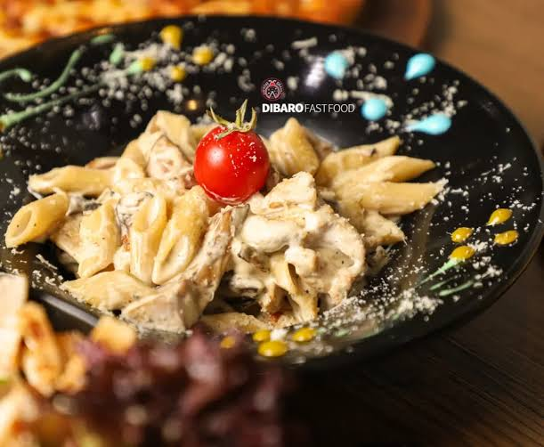

طرز تهیه پاستا با سس الفردو و مرغ
در نگاه اول کشور ایتالیا به غذاهایش معروف است. غذاهایی مانند پاستا و پیتزا.
به نظر شما کدام بهتر است؟ پاستا یا پیتزا؟
در پایین با یک نوع از پاستا ها اشنا میشویم.
پاستا با سس الفردو و مرغ
برای ورود کلیک کنید
 عکس پاستا با سس الفردو و مرغ
عکس پاستا با سس الفردو و مرغ
طرز تهیه پاستا الفردو
مواد اولیه پاستا پنه الفردو
- پاستا
- سینه مرغ(فیله)
- قارچ
- کره
- نمک و فلفل سیاه
- روغن زیتون
- شیر
مواد اولیه سس پاستا الفردو
- خامه
- سیر
- پنیر پارمزان
- جعفری
- کره
طرز تهیه:
- سینه ی مرغ را شسته و فیله کنید و سپس ان را برش دهید.
- تکه های مرغ را در ظرف گود بریزید و نمک و فلفل سیاه و روغن زیتون را اضافه کنید.
- مرغ و ادویه هارا خوب با هم مخلوط کرده و سپس به مدت 1 ساعت دور ان سلفون بکشید و درون یخچال قرار دهید.
- قارچ ها را تمیز کرده و ان را پوست بکنید و به صورت ورقه ای خرد کنید.
- قارچ را با روغن و روی گاز شعله ی زیاد تفت دهید.
- مرغ ها را از یخچال خارج کنید و با روغن خود مرغ ان را سرخ کنید.
- کره را در تابه ای مناسب بریزید و ان را ذوب کنید و سپس سیر را رنده کرده و در کره ی اب شده تفت دهید.
- خامه را به سیر رنده شده اضافه کنید و کمی هم بزنید.
- شیر را به خامه اضافه کنید و مرتب هم بزنید.
- پنیر پارمزان را به این ترکیب اضافه کنید و هم بزنید.
- مقدار اندکی فلفل سیاه و نمک به سس اضافه کنید و هم بزنید.
- جعفری را خرد کنید و به سس اضافه کنید.
- قابلمه ای پر اب را بجوشانید.
- مقداری نمک و روغن به اب حوش اضافه کنید.
- پاستا ها را به اب جوش اضافه کنید.
- مرغ های سرخ شده را به سس الفردو اضافه کنید.
- قارچ های سرخ شده را نیز به سس اضافه کنید و هم بزنید.
- پاستا های پخته شده را اب کش کنید.
- پاستا های اب کش شده را به سس اضافه کنید و هم بزنید.
- پس از مدتی شعله را خاموش کرده و غذا را سرو کنید.
- و در اخر نوش جان.
طرز تهیه پاستا پنه الفردو برای 4 نفر
| مواد لازم |
مقدار لازم |
| پاستا |
300گرم |
| سینه مرغ (فیله) |
1عدد |
| قارچ |
300 گرم |
| کره |
1 قاشق غذا خوری |
| فلفل سیاه و نمک |
به میزان لازم |
| روغن زیتون |
1 یا 2 قاشق غذا خوری |
| شیر |
1 پیمانه |
مواد لازم سس پاستا الفردو
| مواد لازم |
مقدار لازم |
| خامه |
1 پیمانه |
| سیر |
2 حبه |
| پنیر پارمزان |
1 پیمانه |
| جعفری |
1/4 پیمانه |
| کره |
1/4 پیمانه |
کالری پاستا الفردو چه قدر است؟
هر 100 گرم پاستا با سس الفردو قارچ 221 کالری دارد .
به عبارتی دیگر پاستا پنه الفردو در دسته غذا های پر کالری قرار دارد.
